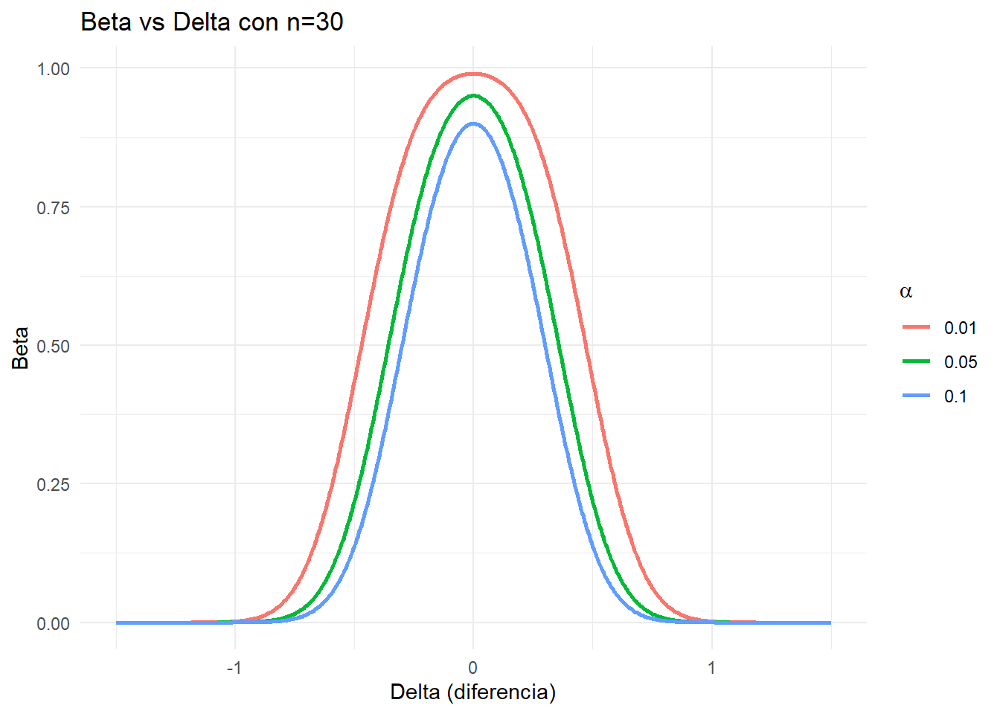
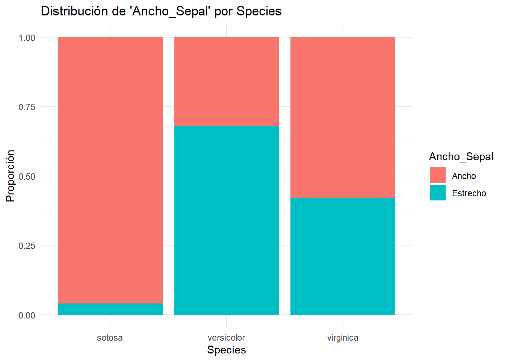
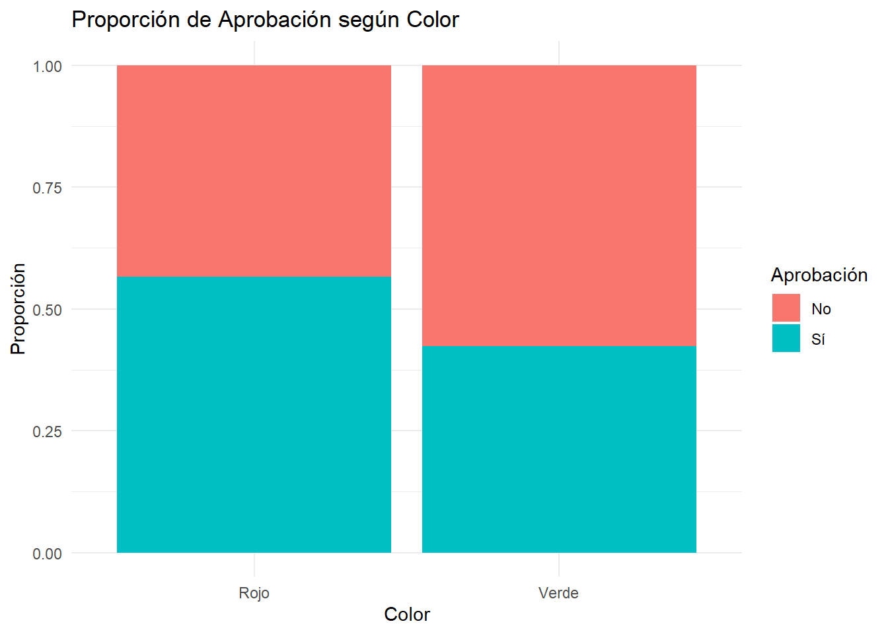

Practica 3 AID 2025
1. Conceptos Básicos de un Test de Hipótesis
1.1. Hipótesis Nula (H₀) y Alternativa (H₁)
Un test de hipótesis es un procedimiento estadístico para tomar decisiones sobre una afirmación (hipótesis) acerca de una característica de la población.
- Hipótesis nula (H₀): Generalmente plantea “no
existe efecto” o “no hay diferencia”.
- Hipótesis alternativa (H₁): Plantea lo contrario, es decir, que sí existe efecto o diferencia.
1.2. Errores de Tipo I y Tipo II
Error Tipo I (\(\alpha\))
Se comete cuando rechazamos H₀ siendo ésta verdadera.Se llama “falso positivo”.
\[ \alpha = P(\text{rechazar H₀} \mid H₀ \text{ es verdadera}). \]Error Tipo II (\(\beta\))
Ocurre cuando no se rechaza H₀ siendo ésta falsa. Se le llama “falso negativo”.
\[ \beta = P(\text{no rechazar H₀} \mid H₀ \text{ es falsa}). \]
1.3. Nivel de Significación y Potencia
- Nivel de significación (\(\alpha\)):
Es la probabilidad máxima que aceptamos para cometer un Error Tipo I. Usualmente se fija en 0.05 o 0.01.
- Potencia de la prueba (\(1-\beta\)):
Es la probabilidad de rechazar H₀ cuando realmente es falsa. Cuanto más alta sea la potencia, más sensible es el test para detectar efectos reales.
\[ 1 - \beta = P(\text{rechazar H₀} \mid H₀ \text{ es falsa}). \]
2. Relación entre \(\alpha\), \(\beta\) y Tamaño de la Muestra
Relación entre \(\alpha\), \(\beta\), tamaño muestral y tamaño del efecto mínimo relevante
Al diseñar un test estadístico, es importante entender cómo se relacionan cuatro elementos clave:
- \(\alpha\): Nivel de significancia (probabilidad de error tipo I)
- \(\beta\): Probabilidad de error tipo II
- Potencia: \(1 - \beta\), es decir, la probabilidad de detectar un efecto real
- Tamaño del efecto mínimo relevante (\(\Delta\)): La diferencia entre grupos o condiciones que consideramos importante desde el punto de vista práctico
1. ¿Qué es el tamaño del efecto mínimo relevante?
Es la magnitud mínima del efecto que nos interesa detectar. No es cualquier diferencia, sino una que tenga sentido práctico, clínico o industrial.
- En un estudio médico: una reducción de al menos 5 mmHg en la presión
- En educación: una mejora de 1 punto en un examen
- En producción: una diferencia de 0.5 mm en una pieza mecánica
Este valor lo define el investigador, y es necesario para calcular el tamaño de muestra o la potencia.
2. Relación entre los parámetros
Para un nivel de significación \(\alpha\) dado:
- Al aumentar el tamaño muestral \(n\), disminuye \(\beta\)
- Esto significa que aumenta la potencia (\(1 - \beta\))
Para un tamaño de muestra fijo:
- Al disminuir \(\alpha\), aumenta \(\beta\)
- Al aumentar \(\alpha\), disminuye \(\beta\)
Para \(\alpha\) y \(n\) fijos:
- Cuanto más grande sea el tamaño del efecto mínimo relevante (\(\Delta\)), más fácil es detectarlo
- A medida que el efecto que queremos detectar se reduce, se necesita un n mayor para mantener la misma potencia
3. Diseño de un test: ¿Qué se fija y qué se calcula?
| Parámetro | ¿Se puede fijar? | ¿Normalmente se fija? |
|---|---|---|
| Nivel de significancia (\(\alpha\)) | ✅ | ✅ |
| Potencia deseada (\(1 - \beta\)) | ✅ | ✅ |
| Tamaño del efecto relevante (\(\Delta\)) | ✅ | ✅ |
| Tamaño de muestra (\(n\)) | ✅ | ✅ (si estás diseñando el experimento) |
3. Curvas de \(\beta\) (Operación Característica) y \(1-\beta\) (Potencia)
- Curva de Operación Característica (COC): Muestra
cómo evoluciona \(\beta\) (probabilidad
de no rechazar H₀ cuando es falsa) frente a cambios en parámetros como
el tamaño de la muestra, el efecto o \(\alpha\).
- Curva de Potencia: Muestra \(1 - \beta\), la probabilidad de rechazar H₀ correctamente cuando es falsa, según el mismo tipo de variaciones.
Ambas curvas son importantes para planificar estudios:
- La Curva de Potencia ayuda a decidir cuán grande debe
ser la muestra para detectar un efecto de cierto tamaño con la
probabilidad deseada.
- La COC puede usarse también como referencia para ver
la probabilidad de cometer un falso negativo en distintos
escenarios.
Supuestos para simplificar:
- Prueba de hipótesis a dos colas para una media, con desviación estándar conocida igual a 1.
- H₀: \(\mu = 0\).
- H₁: \(\mu \neq 0\).
- El “efecto” real (verdadera media \(\mu\)) se asume diferente de 0; por ejemplo, \(\mu = 1\).
- \(\alpha\) tomará algunos valores típicos (0.01, 0.05, 0.1).
- \(n\) variará en un rango (por ej., 5 a 100).
4. Cálculo de \(\beta\) (Error Tipo II)
Para una prueba de dos colas, se rechaza H₀ si \(\lvert Z \rvert > z_{\alpha/2}\), donde
\(Z \sim \mathcal{N}(\delta,
1)\).
- \(\delta\) es el verdadero
desplazamiento de la media en unidades de error estándar, \(\delta = \frac{\text{(media real - media
hipotética)} \times \sqrt{n}}{\sigma}\).
- \(\beta = P(\text{no rechazar H₀} \mid
\text{H₀ es falsa})\).
- Entonces, \(\beta = P(-z_{\alpha/2} \leq Z
\leq z_{\alpha/2})\).
Matemáticamente, para \(Z \sim \mathcal{N}(\delta,1)\): \[ \beta = \Phi\bigl(z_{\alpha/2} - \delta\bigr) \;-\; \Phi\bigl(-z_{\alpha/2} - \delta\bigr). \]
Donde \(\Phi\) es la función de distribución acumulada de la Normal Estándar.
library(ggplot2)
# Definimos la función para calcular Beta en una prueba de 2 colas:
calc_beta <- function(n, alpha, efecto = 1, sigma = 1) {
z_alpha_2 <- qnorm(1 - alpha / 2) # valor crítico
# delta es el desplazamiento (media real - media hipotética) * sqrt(n)/sigma
delta <- (efecto * sqrt(n)) / sigma
# Probabilidad de no rechazar H0
beta_val <- pnorm(z_alpha_2 - delta) - pnorm(-z_alpha_2 - delta)
return(beta_val)
}
# Distintos valores de alpha
alpha_values <- c(0.01, 0.05, 0.10)
# Rango de tamaños de muestra
n_values <- seq(5, 100, by = 1)
# Construimos un data frame con todas las combinaciones de n y alpha
df_beta <- expand.grid(
n = n_values,
alpha = alpha_values
)
# Calculamos Beta para cada combinación
df_beta$Beta <- mapply(
calc_beta,
n = df_beta$n,
alpha = df_beta$alpha
)
# Graficamos Beta vs n, con distintas curvas para cada alpha
ggplot(df_beta, aes(x = n, y = Beta, color = factor(alpha))) +
geom_line(size = 1) +
geom_point() +
labs(
title = "Curva de Operacion Caracteristica: Beta vs. Tamano muestral",
x = "Tamano de la muestra (n)",
y = expression(beta),
color = expression(alpha)
) +
theme_minimal()Interpretación del gráfico de Beta (\(\beta\)):
- Para una media real \(\mu = 1\)
(efecto de 1 unidad), se observa que a mayor \(n\), menor \(\beta\).
- A su vez, para un mismo \(n\),
valores más grandes de \(\alpha\)
implican \(\beta\) más baja.
4.2. Curva de Potencia (\(1 - \beta\)) vs. Tamaño de la Muestra
La potencia es \(1 - \beta\). Representa la probabilidad de rechazar H₀ (correctamente) cuando en realidad hay un efecto. Graficarla nos muestra qué tan “sensible” es nuestro test con distintos tamaños de muestra y distintos niveles de significancia.
# Agregamos la columna "Potencia" = 1 - Beta
df_beta$Potencia <- 1 - df_beta$Beta
# Graficamos la Curva de Potencia vs n, para cada alpha
ggplot(df_beta, aes(x = n, y = Potencia, color = factor(alpha))) +
geom_line(size = 1) +
geom_point() +
labs(
title = "Curva de Potencia: (1 - Beta) vs. Tamano muestral",
x = "Tamano de la muestra (n)",
y = "Potencia = 1 - Beta",
color = expression(alpha)
) +
theme_minimal()Interpretación del gráfico de Potencia (\(1 - \beta\)):
- A medida que aumenta \(n\), la
potencia se aproxima a 1 (test más capaz de detectar diferencias
reales).
- Para un mismo \(n\), un \(\alpha\) mayor también eleva la
probabilidad de rechazar H₀, por lo que la potencia aumenta.
calc_beta <- function(n, alpha, delta, sigma = 1) {
z_alpha_2 <- qnorm(1 - alpha / 2)
# delta estandarizado: (delta * sqrt(n)) / sigma
delta_std <- (delta * sqrt(n)) / sigma
# Beta = P(-z_alpha_2 <= Z - delta_std <= z_alpha_2) para Z ~ N(0,1)
beta_val <- pnorm(z_alpha_2 - delta_std) - pnorm(-z_alpha_2 - delta_std)
return(beta_val)
}
# Parametros fijos y rangos
n_fijo <- 30
alpha_values <- c(0.01, 0.05, 0.10)
delta_values <- seq(-1.5, 1.5, by = 0.005)
df_beta_delta <- expand.grid(delta = delta_values, alpha = alpha_values)
df_beta_delta$Beta <- mapply(
function(a, d) calc_beta(n_fijo, a, d),
df_beta_delta$alpha,
df_beta_delta$delta
)
ggplot(df_beta_delta, aes(x = delta, y = Beta, color = factor(alpha))) +
geom_line(size = 1) +
labs(
title = "Beta vs Delta con n=30",
x = "Delta (diferencia)",
y = "Beta",
color = expression(alpha)
) +
theme_minimal()
# Parametros fijos y rangos
n_fijo <- 300
alpha_values <- c(0.01, 0.05, 0.10)
delta_values <- seq(-1.5, 1.5, by = 0.005)
df_beta_delta <- expand.grid(delta = delta_values, alpha = alpha_values)
df_beta_delta$Beta <- mapply(
function(a, d) calc_beta(n_fijo, a, d),
df_beta_delta$alpha,
df_beta_delta$delta
)
ggplot(df_beta_delta, aes(x = delta, y = Beta, color = factor(alpha))) +
geom_line(size = 1) +
labs(
title = "Beta vs Delta con n=300",
x = "Delta (diferencia)",
y = "Beta",
color = expression(alpha)
) +
theme_minimal()5. Ejemplo de Prueba de Hipótesis y Cálculo de p‑valor
- p‑valor pequeño (ej. < 0.05): Evidencia para
rechazar H₀.
- p‑valor grande: No hay evidencia suficiente para rechazar H₀.
5.1.1 Simulación y Cálculo del p‑valor varianza conocida
set.seed(100)
sd_poblacional <- 2 # conocido
# Simulamos datos donde la media real es 10.5, sd=2, n=40
muestra <- rnorm(40, mean = 10.5, sd = sd_poblacional)
media_muestra <- mean(muestra)
n <- length(muestra)
media_hipotetica <- 10
# Estadístico z para H0: mu = 10 vs H1: mu != 10
error_estandar <- sd_poblacional / sqrt(n)
z_stat <- (media_muestra - media_hipotetica) / error_estandar
p_valor <- 2 * (1 - pnorm(abs(z_stat))) # prueba a dos colas
cat("Media de la muestra:", round(media_muestra, 2), "\n")## Media de la muestra: 10.7cat("Estadistico z:", round(z_stat, 2), "\n")## Estadistico z: 2.21cat("p-valor:", round(p_valor, 4), "\n")## p-valor: 0.02685.1.2 Simulación y Cálculo del p‑valor para varianza desconocida
set.seed(100)
sd_poblacional <- 2 # desconocido
# Simulamos datos donde la media real es 10.5, sd=2, n=40
muestra <- rnorm(40, mean = 10.5, sd = sd_poblacional)
media_muestra <- mean(muestra)
n <- length(muestra)
media_hipotetica <- 10
sd_muestral <- sd(muestra)
grados_libertad <- n-1
# Estadístico t para H0: mu = 10 vs H1: mu != 10
error_estandar <- sd_muestral / sqrt(n)
t_stat <- (media_muestra - media_hipotetica) / error_estandar
p_valor <- 2 * (1 - pt(abs(t_stat), df=grados_libertad)) # prueba a dos colas
cat("Media de la muestra:", round(media_muestra, 2), "\n")## Media de la muestra: 10.7cat("Estadistico t:", round(t_stat, 2), "\n")## Estadistico t: 3.1cat("p-valor:", round(p_valor, 4), "\n")## p-valor: 0.0035Interpretación:
- Si \(\text{p-valor} < \alpha\)
(por ejemplo, 0.05), se rechaza H₀.
- Si \(\text{p-valor} \geq \alpha\), no
se puede rechazar H₀.
5.2. Visualización del p‑valor en la Distribución Normal
# Distribución Normal Estándar
x <- seq(-4, 4, length.out = 1000)
densidad <- dnorm(x)
df <- data.frame(x = x, densidad = densidad)
valor_obs <- 1.5 # Ejemplo de estadístico observado
p_valor_ej <- 2 * (1 - pnorm(abs(valor_obs)))
ggplot(df, aes(x = x, y = densidad)) +
geom_line(size = 1) +
# Area en las dos colas más extremas que valor_obs
geom_area(data = subset(df, x >= valor_obs),
aes(x = x, y = densidad), alpha = 0.4) +
geom_area(data = subset(df, x <= -valor_obs),
aes(x = x, y = densidad), alpha = 0.4) +
labs(
title = "Distribucion Normal y Region del p-valor",
subtitle = paste("Valor observado =", valor_obs,
"| p-valor =", round(p_valor_ej, 4)),
x = "Valores",
y = "Densidad"
) +
theme_minimal()En la gráfica, las áreas sombreadas en las colas representan la probabilidad (p‑valor) de obtener un valor igual o más extremo que 1.5 (o -1.5) bajo H₀.
3. Ejemplos
3.1. Ejemplo 1: Test de Hipótesis para la Media de una Distribución Normal
Imaginemos que queremos comprobar si la media de una variable es
10.
Generamos una muestra de datos con una media real de 10.5 y evaluamos la
hipótesis:
- H₀: µ = 10
- H₁: µ ≠ 10 Varianza desconocida Calcularemos el
p‑valor de forma manual usando la función
pt.
set.seed(123)
# Simular una muestra de 10 datos de una distribución normal con media 10.5 y desviación 2
muestra <- rnorm(10, mean = 10.5, sd = 2)
cat(" muestra:", muestra, "\n")## muestra: 9.379049 10.03965 13.61742 10.64102 10.75858 13.93013 11.42183 7.969878 9.126294 9.608676media_muestra <- mean(muestra)
cat("Media muestra:", media_muestra, "\n")## Media muestra: 10.64925sd_muestra <- sqrt(sum((muestra-media_muestra)**2)/(n-1))
cat("sd muestra:", sd_muestra, "\n")## sd muestra: 0.9163661# o tambien sino sd_muestra <- sd(muestra)
n <- length(muestra)
# Valor hipotético
media_hipotetica <- 10
# Calcular el error estándar
error_est <- sd_muestra / sqrt(n)
# Calcular el estadístico t (usando la aproximación normal)
t <- (media_muestra - media_hipotetica) / error_est
# p-valor para una prueba de dos colas
p_valor_manual <- 2 * (1 - pt(abs(t), df=n-1))
cat("Estadistico t:", t, "\n")## Estadistico t: 2.240494cat("p-valor:", p_valor_manual, "\n")## p-valor: 0.05180143t_test_resultado <- t.test(muestra, mu = 10, type="one.sample", alternative = "two.sided")
t_test_resultado##
## One Sample t-test
##
## data: muestra
## t = 1.0763, df = 9, p-value = 0.3098
## alternative hypothesis: true mean is not equal to 10
## 95 percent confidence interval:
## 9.284659 12.013843
## sample estimates:
## mean of x
## 10.64925set.seed(1804)
n1 <- 9
n2 <- 11
mu_a_real <- 15
mu_b_real <- 17
sd_a_real <- 2
sd_b_real <- 3
grupo_A <- rnorm(n1, mu_a_real, sd_a_real)
grupo_B <- rnorm(n2, mu_b_real, sd_b_real)
cat("=== Grupo A ===\n")## === Grupo A ===print(grupo_A)## [1] 12.45878 15.88824 14.69009 15.19677 14.69033 15.64319 13.83405 17.09258
## [9] 17.11884cat("\n=== Grupo B ===\n")##
## === Grupo B ===print(grupo_B)## [1] 18.33565 17.39671 18.05813 21.58268 16.12685 19.73508 15.52924 16.20570
## [9] 17.22678 15.37819 21.02110cat("\n")# ----------------------
# Paso 1: Diferencia observada entre las medias
# ----------------------
media_A <- mean(grupo_A)
media_B <- mean(grupo_B)
diff_obs <- media_B - media_A
cat("Diferencia observada (B - A):", round(diff_obs, 2), "\n\n")## Diferencia observada (B - A): 2.69# ======================
# Método 1: Prueba t asumiendo varianzas iguales (Pooled Variance)
# ======================
cat("=== Prueba t con varianzas iguales (Pooled Variance) ===\n")## === Prueba t con varianzas iguales (Pooled Variance) ===# a) Calcular varianzas muestrales de cada grupo
var_A <- var(grupo_A)
var_B <- var(grupo_B)
cat("Varianza de Grupo A:", round(var_A, 2), "\n")## Varianza de Grupo A: 2.23cat("Varianza de Grupo B:", round(var_B, 2), "\n\n")## Varianza de Grupo B: 4.56# b) Calcular la varianza combinada (pooled)
var_pooled <- (((n1 - 1) * var_A) + ((n2 - 1) * var_B)) / (n1 + n2 - 2)
cat("Varianza combinada (pooled):", round(var_pooled, 2), "\n\n")## Varianza combinada (pooled): 3.52# c) Calcular el error estándar de la diferencia
# Fórmula: SE = sqrt(s_p^2*(1/n1 + 1/n2))
SE_pooled <- sqrt(var_pooled * (1/n1 + 1/n2))
cat("Error estándar (pooled):", round(SE_pooled, 2), "\n\n")## Error estándar (pooled): 0.84# d) Calcular el estadístico t
# Fórmula: t = (mean_B - mean_A) / SE
t_stat_pooled <- diff_obs / SE_pooled
cat("Estadístico t (pooled):", round(t_stat_pooled, 2), "\n")## Estadístico t (pooled): 3.19# e) Grados de libertad
df_pooled <- n1 + n2 - 2
cat("Grados de libertad (pooled):", df_pooled, "\n\n")## Grados de libertad (pooled): 18# f) Calcular los p-valores para cada alternativa:
# - Bilateral: p = 2*(1 - pt(|t|, df))
p_valor_pooled_two <- 2 * (1 - pt(abs(t_stat_pooled), df = df_pooled))
# - Unilateral (H1: mu_B > mu_A): p = 1 - pt(t, df)
p_valor_pooled_right <- 1 - pt(t_stat_pooled, df = df_pooled)
# - Unilateral (H1: mu_B < mu_A): p = pt(t, df)
p_valor_pooled_left <- pt(t_stat_pooled, df = df_pooled)
cat("p-valor bilateral (pooled):", round(p_valor_pooled_two, 4), "\n")## p-valor bilateral (pooled): 0.005cat("p-valor unilateral (B > A) (pooled):", round(p_valor_pooled_right, 4), "\n")## p-valor unilateral (B > A) (pooled): 0.0025cat("p-valor unilateral (B < A) (pooled):", round(p_valor_pooled_left, 4), "\n\n")## p-valor unilateral (B < A) (pooled): 0.9975# ======================
# Método 2: Prueba t sin asumir igualdad de varianzas (Welch's t-test)
# ======================
cat("=== Prueba t con varianzas diferentes (Welch's t-test) ===\n")## === Prueba t con varianzas diferentes (Welch's t-test) ===# a) Calcular el error estándar sin asumir igualdad:
# Fórmula: SE = sqrt( var_A/n1 + var_B/n2 )
SE_welch <- sqrt(var_A/n1 + var_B/n2)
cat("Error estándar (Welch):", round(SE_welch, 2), "\n\n")## Error estándar (Welch): 0.81# b) Calcular el estadístico t para Welch
t_stat_welch <- diff_obs / SE_welch
cat("Estadístico t (Welch):", round(t_stat_welch, 2), "\n\n")## Estadístico t (Welch): 3.31# c) Calcular los grados de libertad con la aproximación de Welch-Satterthwaite:
# Fórmula: df = ( (var_A/n1 + var_B/n2)^2 ) / [ ((var_A/n1)^2/(n1-1)) + ((var_B/n2)^2/(n2-1)) ]
df_welch <- ( (var_A/n1 + var_B/n2)^2 ) / ( ((var_A/n1)^2)/(n1 - 1) + ((var_B/n2)^2)/(n2 - 1) )
cat("Grados de libertad (Welch):", round(df_welch, 2), "\n\n")## Grados de libertad (Welch): 17.65# d) Calcular los p-valores para cada alternativa:
p_valor_welch_two <- 2 * (1 - pt(abs(t_stat_welch), df = df_welch))
p_valor_welch_right <- 1 - pt(t_stat_welch, df = df_welch)
p_valor_welch_left <- pt(t_stat_welch, df = df_welch)
cat("p-valor bilateral (Welch):", round(p_valor_welch_two, 4), "\n")## p-valor bilateral (Welch): 0.004cat("p-valor unilateral (B > A) (Welch):", round(p_valor_welch_right, 4), "\n")## p-valor unilateral (B > A) (Welch): 0.002cat("p-valor unilateral (B < A) (Welch):", round(p_valor_welch_left, 4), "\n")## p-valor unilateral (B < A) (Welch): 0.998# Varianzas iguales - Alternativa bilateral
t.test(grupo_B, grupo_A, var.equal = TRUE, type="two.sample", alternative = "two.sided")##
## Two Sample t-test
##
## data: grupo_B and grupo_A
## t = 3.1925, df = 18, p-value = 0.005045
## alternative hypothesis: true difference in means is not equal to 0
## 95 percent confidence interval:
## 0.9208353 4.4654992
## sample estimates:
## mean of x mean of y
## 17.87238 15.17921# Varianzas iguales - Alternativa B > A
t.test(grupo_B, grupo_A, var.equal = TRUE, type="two.sample",alternative = "greater")##
## Two Sample t-test
##
## data: grupo_B and grupo_A
## t = 3.1925, df = 18, p-value = 0.002523
## alternative hypothesis: true difference in means is greater than 0
## 95 percent confidence interval:
## 1.230316 Inf
## sample estimates:
## mean of x mean of y
## 17.87238 15.17921# Varianzas iguales - Alternativa B < A
t.test(grupo_B, grupo_A, var.equal = TRUE, type="two.sample",alternative = "less")##
## Two Sample t-test
##
## data: grupo_B and grupo_A
## t = 3.1925, df = 18, p-value = 0.9975
## alternative hypothesis: true difference in means is less than 0
## 95 percent confidence interval:
## -Inf 4.156018
## sample estimates:
## mean of x mean of y
## 17.87238 15.17921# Varianzas diferentes (Welch) - Alternativa bilateral
t.test(grupo_B, grupo_A, var.equal = FALSE, type="two.sample",alternative = "two.sided")##
## Welch Two Sample t-test
##
## data: grupo_B and grupo_A
## t = 3.3101, df = 17.646, p-value = 0.003976
## alternative hypothesis: true difference in means is not equal to 0
## 95 percent confidence interval:
## 0.9813397 4.4049948
## sample estimates:
## mean of x mean of y
## 17.87238 15.17921# Varianzas diferentes (Welch) - Alternativa B > A
t.test(grupo_B, grupo_A, var.equal = FALSE, type="two.sample",alternative = "greater")##
## Welch Two Sample t-test
##
## data: grupo_B and grupo_A
## t = 3.3101, df = 17.646, p-value = 0.001988
## alternative hypothesis: true difference in means is greater than 0
## 95 percent confidence interval:
## 1.280752 Inf
## sample estimates:
## mean of x mean of y
## 17.87238 15.17921# Varianzas diferentes (Welch) - Alternativa B < A
t.test(grupo_B, grupo_A, var.equal = FALSE, type="two.sample",alternative = "less")##
## Welch Two Sample t-test
##
## data: grupo_B and grupo_A
## t = 3.3101, df = 17.646, p-value = 0.998
## alternative hypothesis: true difference in means is less than 0
## 95 percent confidence interval:
## -Inf 4.105583
## sample estimates:
## mean of x mean of y
## 17.87238 15.179213.2. Ejemplo 2: Test de Hipótesis en un Experimento de Lanzamiento de Moneda
Supongamos que lanzamos una moneda pesada varias veces y queremos comprobar si es tan pesada como nos reporta su fabricante (probabilidad de cara teorica = 0.7).
- H₀: La moneda esta bien cargada (p = 0.7)
- H₁: La moneda no esta bien cargada (p ≠ 0.7)
La prueba que realizamos es una prueba binomial de dos colas, porque no solo nos interesa si hay demasiadas caras, sino también si hay demasiado pocas.
El p‑valor se calcula como el área más extrema (o más rara) que la observación, en ambos extremos de la distribución:
p_valor_binom <- 2 * min(
pbinom(65, size = 100, prob = 0.7),
1 - pbinom(65 - 1, size = 100, prob = 0.7)
)
p_valor_binom## [1] 0.3257166Esto se hace porque: - pbinom(caras) da la probabilidad
acumulada hasta ese número (casos “menores”). -
1 - pbinom(caras - 1) da la probabilidad acumulada desde
ese número hacia arriba (casos “mayores”).
Tomamos el mínimo de los dos porque en una prueba bilateral nos interesa duplicar la cola más extrema, no ambas sumadas (eso sobredimensionaría el p‑valor).
Intervalos de confianza
exitos <- 65
fracasos <- 100 - exitos
alpha <- 0.05
cat(qbeta(alpha/2, exitos, fracasos + 1)) # Límite inferior## 0.5481506cat(qbeta(1- alpha/2, exitos + 1, fracasos)) # Límite superior## 0.7427062Aproximacion Normal
p_hat <- exitos/100
rango <- qnorm(alpha/2)*sqrt(p_hat * (1-p_hat) / 100)
cat(p_hat + rango)## 0.5565157cat(p_hat - rango)## 0.7434843library(shiny)
library(ggplot2)
ui <- fluidPage(
titlePanel("Test de Hipótesis con Lanzamientos de Moneda"),
sidebarLayout(
sidebarPanel(
sliderInput("n", "Número de lanzamientos:", min = 10, max = 500, value = 100, step = 10),
sliderInput("p_real", "Probabilidad real de cara:", min = 0.01, max = 0.99, value = 0.5, step = 0.01)
),
mainPanel(
verbatimTextOutput("resultados"),
plotOutput("grafico")
)
)
)
server <- function(input, output) {
output$resultados <- renderPrint({
set.seed(456)
# Usamos la probabilidad real para generar los datos
lanzamientos <- rbinom(input$n, size = 1, prob = input$p_real)
caras <- sum(lanzamientos)
# Hacemos el test como si la moneda fuera calibrada
p_valor <- 2 * min(
pbinom(caras, size = input$n, prob = 0.7),
1 - pbinom(caras - 1, size = input$n, prob = 0.7)
)
cat("Número de lanzamientos:", input$n, "\n")
cat("Probabilidad real de cara:", input$p_real, "\n")
cat("Número de caras observadas:", caras, "\n")
cat("p-valor (hipótesis: p = 0.5):", round(p_valor, 4), "\n")
})
output$grafico <- renderPlot({
set.seed(456)
lanzamientos <- rbinom(input$n, size = 1, prob = input$p_real)
caras <- sum(lanzamientos)
x_vals <- 0:input$n
densidad <- dbinom(x_vals, size = input$n, prob = 0.7)
df <- data.frame(x = x_vals, densidad = densidad)
ggplot(df, aes(x = x, y = densidad)) +
geom_bar(stat = "identity", fill = "lightblue", color = "black") +
geom_vline(xintercept = caras, color = "red", size = 1) +
labs(title = paste("Distribución Binomial bajo H₀ (n =", input$n, ", p = 0.7)"),
subtitle = paste("Datos generados con p_real =", input$p_real,
"→ caras observadas =", caras),
x = "Número de caras",
y = "Probabilidad") +
theme_minimal()
})
}
shinyApp(ui, server)4. Ejercicios
### Ejercicio 1: Media de una Distribución Normal
Simulen una muestra de 40 datos de una distribución normal con media
15 y desviación 3. Planteen la hipótesis:
- H₀: La media es 14.
- H₁: La media es diferente de 14.
Calcular el estadístico (z) y el p‑valor manualmente.
- Pista: Use funciones rnorm(),
mean(), sd(), y pnorm().
### Ejercicio 2: Visualización del p‑valor
Utilizando ggplot2, grafiquen la distribución normal estándar y
marquen la región que corresponde al p‑valor para un valor observado de
2.2 en una prueba de dos colas.
- Pista: Use geom_area() para sombrear las
colas de la distribución.
### Ejercicio 3: Experimento de Lanzamiento de Moneda
Simulen 200 lanzamientos de una moneda (con probabilidad 0.5) y
supongan que obtuvieron un número inusual de caras (por ejemplo, 130
sobre 200).
Calcular el p‑valor usando la distribución binomial y explique si se
rechazaría la hipótesis de moneda justa (usando α = 0.05).
- Pista: Use rbinom(),
pbinom() y visualice la distribución.
Ejercicio 4: Comparación de Medias mediante Re‑muestreo
Simulen dos grupos independientes de 50 observaciones cada uno.
- Grupo A: datos generados de una distribución normal con media 20 y
desviación 2.
- Grupo B: datos generados de una distribución normal con media 22 y
desviación 2.
Planteen la hipótesis nula H₀: µₐ = µ_b contra la alternativa H₁: µₐ
≠ µ_b.
Realicen lo siguiente:
1. Calcular la diferencia de medias observada.
2. Combinar ambos grupos y, mediante re‑muestreo (1000 simulaciones),
generar la distribución de la diferencia de medias bajo H₀ asignando
aleatoriamente los datos en dos grupos de 50 observaciones.
3. Calcular el p‑valor como la proporción de simulaciones en las que la
diferencia absoluta simulada es mayor o igual a la diferencia
observada.
4. Visualizar la distribución de las diferencias simuladas y marcar la
diferencia observada.
5. Resoluciones de los Ejercicios
Resolución Ejercicio 1
set.seed(101)
# Simular 40 datos con media = 15 y sd = 3
muestra_e1 <- rnorm(40, mean = 15, sd = 3)
media_muestra_e1 <- mean(muestra_e1)
sd_muestra_e1 <- sd(muestra_e1)
n_e1 <- length(muestra_e1)
# Hipótesis: H₀: µ = 14, H₁: µ ≠ 14
media_hipotetica_e1 <- 14
error_est_e1 <- sd_muestra_e1 / sqrt(n_e1)
z_e1 <- (media_muestra_e1 - media_hipotetica_e1) / error_est_e1
p_valor_e1 <- 2 * (1 - pnorm(abs(z_e1)))
cat("Media de la muestra:", round(media_muestra_e1,2), "\n")## Media de la muestra: 14.85cat("Estadístico z:", round(z_e1,2), "\n")## Estadístico z: 1.96cat("p-valor:", round(p_valor_e1,4), "\n")## p-valor: 0.0501Resolución Ejercicio 2
library(ggplot2)
# Distribución normal estándar
x <- seq(-4, 4, length.out = 1000)
df2 <- data.frame(x = x, densidad = dnorm(x))
valor_obs_e2 <- 2.2
p_valor_e2 <- 2 * (1 - pnorm(valor_obs_e2))
ggplot(df2, aes(x = x, y = densidad)) +
geom_line(color = "blue", size = 1) +
geom_area(data = subset(df2, x >= valor_obs_e2), aes(y = densidad), fill = "red", alpha = 0.4) +
geom_area(data = subset(df2, x <= -valor_obs_e2), aes(y = densidad), fill = "red", alpha = 0.4) +
labs(title = "Distribución Normal Estándar y Región del p-valor",
subtitle = paste("Valor observado =", valor_obs_e2, "| p-valor =", round(p_valor_e2,4)),
x = "Valores", y = "Densidad") +
theme_minimal()Resolución Ejercicio 3
set.seed(202)
# Simular 200 lanzamientos de moneda
lanzamientos_e3 <- rbinom(200, size = 1, prob = 0.5)
caras_e3 <- sum(lanzamientos_e3)
# Supongamos que se obtuvieron 130 caras en la simulación
# Para efectos del ejercicio, forzamos el valor:
caras_e3 <- 130
# Calcular el p-valor para una prueba de dos colas
p_valor_binom_e3 <- 2 * min(
pbinom(caras_e3, size = 200, prob = 0.5),
1 - pbinom(caras_e3 - 1, size = 200, prob = 0.5)
)
cat("Número de caras:", caras_e3, "\n")## Número de caras: 130cat("p-valor (binomial):", round(p_valor_binom_e3,9), "\n")## p-valor (binomial): 2.6529e-05# Con α = 0.05, si el p-valor es menor, se rechaza la hipótesis de moneda justa.Resolución Ejercicio 4
set.seed(2025)
library(ggplot2)
grupo_A <- rnorm(50, mean = 20, sd = 2)
grupo_B <- rnorm(50, mean = 22, sd = 2)
diff_obs <- mean(grupo_B) - mean(grupo_A)
pool <- c(grupo_A, grupo_B)
n <- length(grupo_A)
n_sim <- 1000
diff_sim <- replicate(n_sim, {
muestra <- sample(pool)
mean(muestra[(n+1):(2*n)]) - mean(muestra[1:n])
})
p_valor <- mean(abs(diff_sim) >= abs(diff_obs))
ggplot(data.frame(diff_sim = diff_sim), aes(x = diff_sim)) +
geom_histogram(bins = 30, fill = "skyblue", color = "black") +
geom_vline(xintercept = diff_obs, color = "red", size = 1.2) +
labs(title = "Distribución de Diferencias de Medias Simuladas",
subtitle = paste("Diferencia Observada =", round(diff_obs, 2),
"| p-valor =", round(p_valor, 4)),
x = "Diferencia de Medias", y = "Frecuencia") +
theme_minimal()3. Test de Independencia
3.1. Concepto y Uso
El test de independencia se utiliza para determinar si dos variables categóricas son estadísticamente independientes. Por lo general, se emplea el test chi-cuadrado de independencia.
- Hipótesis:
- H₀: Las dos variables son independientes.
- H₁: Existe una asociación (dependencia) entre las dos variables.
3.2.0 Ejemplo super sencillo
observado <- matrix(c(35, 25, 20, 20), nrow = 2, byrow = TRUE)
rownames(observado) <- c("Masculino", "Femenino")
colnames(observado) <- c("Sí", "No")
observado## Sí No
## Masculino 35 25
## Femenino 20 20fila_totales <- rowSums(observado)
col_totales <- colSums(observado)
total <- sum(observado)
esperado <- outer(fila_totales, col_totales) / total
esperado## Sí No
## Masculino 33 27
## Femenino 22 18chi2_manual <- sum((observado - esperado)^2 / esperado)
chi2_manual## [1] 0.6734007Ahora hay que comparar el estadistico para saber su probabilidad y p-valor
df <- (nrow(observado) - 1) * (ncol(observado) - 1)
alpha <- 0.05
valor_critico <- qchisq(1 - alpha, df)
valor_critico## [1] 3.841459if (chi2_manual > valor_critico) {
cat("Se rechaza H0\n")
} else {
cat("No se rechaza H0\n")
}## No se rechaza H0P valor seria
pchisq(chi2_manual, df=1)## [1] 0.58813153.2.1 Ejemplo Práctico con Datos Simulados
Imaginemos un escenario donde se evalúa la relación entre el género (Masculino, Femenino) y la preferencia por un producto (Sí, No).
# Crear una tabla de contingencia simulada
genero <- c(rep("Masculino", 60), rep("Femenino", 40))
preferencia <- c(sample(c("Sí", "No"), 60, replace = TRUE, prob = c(0.7, 0.3)),
sample(c("Sí", "No"), 40, replace = TRUE, prob = c(0.4, 0.6)))
datos_cat <- data.frame(genero, preferencia)
# Crear la tabla de contingencia
tabla_contingencia <- table(datos_cat$genero, datos_cat$preferencia)
print(tabla_contingencia)##
## No Sí
## Femenino 23 17
## Masculino 19 41# Realizar el test de chi-cuadrado de independencia
test_independencia <- chisq.test(tabla_contingencia)
print(test_independencia)##
## Pearson's Chi-squared test with Yates' continuity correction
##
## data: tabla_contingencia
## X-squared = 5.5573, df = 1, p-value = 0.0184Interpretación:
Si el p‑valor es menor a 0.05 se rechaza H₀, indicando que existe una
asociación entre el género y la preferencia por el producto.
3.3. Visualización de la Tabla de Contingencia
library(ggplot2)
# Create the plot
ggplot(datos_cat, aes(x = genero, fill = preferencia)) +
geom_bar(position = "fill") + # "fill" makes it proportional
labs(title = "Distribución de Preferencia por Género",
x = "Género",
y = "Proporción",
fill = "Preferencia") +
theme_minimal()# Simulación de datos
set.seed(123)
grupo_etario <- c(rep("10-30", 100), rep("30-50", 100), rep("50-80", 100))
genero_pelicula <- c(
sample(c("Comedia", "Acción", "Romance"), 100, replace = TRUE, prob = c(0.5, 0.4, 0.1)),
sample(c("Comedia", "Acción", "Romance"), 100, replace = TRUE, prob = c(0.3, 0.5, 0.2)),
sample(c("Comedia", "Acción", "Romance"), 100, replace = TRUE, prob = c(0.2, 0.2, 0.6))
)
datos_cat_ext <- data.frame(grupo_etario, genero_pelicula)
# Crear la tabla de contingencia
tabla_contingencia_ext <- table(datos_cat_ext$grupo_etario, datos_cat_ext$genero_pelicula)
print(tabla_contingencia_ext)##
## Acción Comedia Romance
## 10-30 40 53 7
## 30-50 50 31 19
## 50-80 20 19 61# Realizar el test de chi-cuadrado de independencia
test_independencia_ext <- chisq.test(tabla_contingencia_ext)
print(test_independencia_ext)##
## Pearson's Chi-squared test
##
## data: tabla_contingencia_ext
## X-squared = 85.496, df = 4, p-value < 2.2e-16ggplot(datos_cat_ext, aes(x = grupo_etario, fill = genero_pelicula)) +
geom_bar(position = "fill") +
labs(title = "Preferencias de Género de Película por Grupo Etario",
x = "Grupo Etario",
y = "Proporción",
fill = "Género de Película") +
theme_minimal()4. Ejercicios
Ejercicio 2: Potencia de la Prueba
Simule una muestra de 50 datos con una media de 12 y desviación 3. Plantee la prueba: - H₀: µ = 10 - H₁: µ ≠ 10
Utilice la función power.t.test() para determinar el
tamaño muestral necesario para alcanzar una potencia de al menos 0.85,
considerando un tamaño del efecto (diferencia) de 2, una desviación
estándar de 3 y un nivel de significancia de 0.05.
### Ejercicio 3: Test de Independencia
Dado el siguiente conjunto de datos simulados que representan la relación entre el tipo de estudio (Presencial, Virtual) y la satisfacción (Alta, Media, Baja) de los estudiantes.
set.seed(123) tipo_estudio <- sample(c(“Presencial”, “Virtual”), size = 150, replace = TRUE, prob = c(0.6, 0.4)) satisfaccion <- sample(c(“Alta”, “Media”, “Baja”), size = 150, replace = TRUE, prob = c(0.5, 0.3, 0.2)) datos_e3 <- data.frame(tipo_estudio, satisfaccion)
Realice lo siguiente:
1. Construya la tabla de contingencia.
2. Realice el test de chi-cuadrado para determinar si existe una
relación entre las dos variables.
3. Visualice los resultados utilizando un gráfico de mosaico.
5. Resoluciones de los Ejercicios
Resolución Ejercicio 2: Potencia de la Prueba
# Determinar el tamaño muestral necesario para una potencia de 0.85
resultado_potencia <- power.t.test(delta = 2, sd = 3, sig.level = 0.05, power = 0.85, type = "one.sample", alternative = "two.sided")
print(resultado_potencia)##
## One-sample t test power calculation
##
## n = 22.20435
## delta = 2
## sd = 3
## sig.level = 0.05
## power = 0.85
## alternative = two.sidedComentario:
El resultado indicará el tamaño muestral necesario por grupo para
alcanzar una potencia de al menos 85% dado el tamaño del efecto y la
variabilidad propuesta.
Resolución Ejercicio 3: Test de Independencia
# Simulación de datos: Tipo de estudio y Satisfacción
set.seed(123)
tipo_estudio <- sample(c("Presencial", "Virtual"), size = 150, replace = TRUE, prob = c(0.6, 0.4))
satisfaccion <- sample(c("Alta", "Media", "Baja"), size = 150, replace = TRUE, prob = c(0.5, 0.3, 0.2))
datos_e3 <- data.frame(tipo_estudio, satisfaccion)
# Tabla de contingencia
tabla_e3 <- table(datos_e3$tipo_estudio, datos_e3$satisfaccion)
print(tabla_e3)##
## Alta Baja Media
## Presencial 45 19 25
## Virtual 32 8 21# Test de chi-cuadrado de independencia
test_e3 <- chisq.test(tabla_e3)
print(test_e3)##
## Pearson's Chi-squared test
##
## data: tabla_e3
## X-squared = 1.8623, df = 2, p-value = 0.3941library(ggplot2)
# Create the stacked bar chart
ggplot(datos_e3, aes(x = tipo_estudio, fill = satisfaccion)) +
geom_bar(position = "fill") + # "fill" makes it proportional
labs(title = "Distribución de Satisfacción por Tipo de Estudio",
x = "Tipo de Estudio",
y = "Proporción",
fill = "Satisfacción") +
theme_minimal()2. Test de Permutaciones para Variables Cualitativas (Proporciones)
Concepto y Uso
El test de permutaciones es un método no paramétrico
que consiste en reordenar aleatoriamente las etiquetas de grupo para
evaluar la significancia de la diferencia observada en la proporción
entre dos grupos.
- Proceso:
1. Calcular la diferencia observada en la proporción entre dos
grupos.
2. Permutar (reordenar) las etiquetas muchas veces y calcular la
diferencia en cada permutación.
3. Estimar el p‑valor como la proporción de permutaciones en las que la
diferencia es al menos tan extrema como la observada.
Ejemplo Práctico
Simulamos dos grupos de 80 observaciones cada uno, donde en el Grupo A la proporción de “Sí” es 0.70 y en el Grupo B es 0.55. Se evalúa si la diferencia es significativa mediante 5000 permutaciones.
set.seed(456)
n <- 80
grupo <- rep(c("A", "B"), each = n)
respuesta <- c(
sample(c("Sí", "No"), size = n, replace = TRUE, prob = c(0.70, 0.30)),
sample(c("Sí", "No"), size = n, replace = TRUE, prob = c(0.55, 0.45))
)
datos_perm <- data.frame(grupo, respuesta)
datos_perm## grupo respuesta
## 1 A Sí
## 2 A Sí
## 3 A No
## 4 A No
## 5 A No
## 6 A Sí
## 7 A Sí
## 8 A Sí
## 9 A Sí
## 10 A Sí
## 11 A Sí
## 12 A Sí
## 13 A No
## 14 A No
## 15 A Sí
## 16 A Sí
## 17 A No
## 18 A Sí
## 19 A No
## 20 A Sí
## 21 A Sí
## 22 A No
## 23 A No
## 24 A Sí
## 25 A No
## 26 A No
## 27 A No
## 28 A Sí
## 29 A Sí
## 30 A Sí
## 31 A No
## 32 A Sí
## 33 A No
## 34 A Sí
## 35 A Sí
## 36 A No
## 37 A No
## 38 A No
## 39 A No
## 40 A Sí
## 41 A Sí
## 42 A Sí
## 43 A Sí
## 44 A Sí
## 45 A Sí
## 46 A Sí
## 47 A Sí
## 48 A Sí
## 49 A Sí
## 50 A No
## 51 A No
## 52 A No
## 53 A Sí
## 54 A Sí
## 55 A Sí
## 56 A No
## 57 A No
## 58 A Sí
## 59 A Sí
## 60 A Sí
## 61 A Sí
## 62 A Sí
## 63 A Sí
## 64 A Sí
## 65 A Sí
## 66 A Sí
## 67 A Sí
## 68 A Sí
## 69 A Sí
## 70 A Sí
## 71 A No
## 72 A No
## 73 A Sí
## 74 A Sí
## 75 A Sí
## 76 A Sí
## 77 A Sí
## 78 A Sí
## 79 A Sí
## 80 A Sí
## 81 B Sí
## 82 B Sí
## 83 B No
## 84 B No
## 85 B Sí
## 86 B No
## 87 B Sí
## 88 B Sí
## 89 B No
## 90 B No
## 91 B Sí
## 92 B No
## 93 B Sí
## 94 B No
## 95 B No
## 96 B No
## 97 B Sí
## 98 B Sí
## 99 B No
## 100 B No
## 101 B Sí
## 102 B Sí
## 103 B Sí
## 104 B Sí
## 105 B No
## 106 B No
## 107 B No
## 108 B No
## 109 B No
## 110 B Sí
## 111 B No
## 112 B Sí
## 113 B Sí
## 114 B No
## 115 B No
## 116 B No
## 117 B No
## 118 B No
## 119 B No
## 120 B No
## 121 B Sí
## 122 B Sí
## 123 B Sí
## 124 B No
## 125 B Sí
## 126 B No
## 127 B No
## 128 B Sí
## 129 B Sí
## 130 B Sí
## 131 B No
## 132 B Sí
## 133 B No
## 134 B No
## 135 B Sí
## 136 B No
## 137 B Sí
## 138 B No
## 139 B Sí
## 140 B No
## 141 B Sí
## 142 B Sí
## 143 B Sí
## 144 B Sí
## 145 B Sí
## 146 B No
## 147 B No
## 148 B No
## 149 B Sí
## 150 B No
## 151 B No
## 152 B No
## 153 B Sí
## 154 B Sí
## 155 B Sí
## 156 B No
## 157 B Sí
## 158 B No
## 159 B No
## 160 B NoDiferencia observada en la proporción de “Sí”
prop_A <- mean(datos_perm$respuesta[datos_perm$grupo == "A"] == "Sí")
prop_B <- mean(datos_perm$respuesta[datos_perm$grupo == "B"] == "Sí")
diff_obs <- prop_A - prop_B
diff_obs## [1] 0.225# Permutaciones: 5000 réplicas
n_perm <- 5000
dif_perm <- replicate(n_perm, {
grupo_perm <- sample(datos_perm$grupo)
prop_A_perm <- mean(datos_perm$respuesta[grupo_perm == "A"] == "Sí")
prop_B_perm <- mean(datos_perm$respuesta[grupo_perm == "B"] == "Sí")
prop_A_perm - prop_B_perm
})
# p-valor (test bilateral)
p_valor_perm <- mean(abs(dif_perm) >= abs(diff_obs))
cat("p-valor de permutación:", round(p_valor_perm, 4), "\n")## p-valor de permutación: 0.0058# Visualización de la distribución de diferencias
df_perm <- data.frame(diff = dif_perm)
ggplot(df_perm, aes(x = diff)) +
geom_histogram(bins = 30, fill = "lightgreen", color = "black", alpha = 0.7) +
geom_vline(xintercept = diff_obs, color = "red", linetype = "dashed", size = 1.2) +
labs(title = "Distribución de Diferencias en Proporciones (Permutaciones)",
x = "Diferencia (Grupo A - Grupo B)", y = "Frecuencia") +
theme_minimal()4. Test Exacto de Fisher
Concepto y Uso
El test exacto de Fisher es utilizado para evaluar
la asociación en tablas de contingencia 2×2 cuando las frecuencias son
bajas.
- Hipótesis:
- H₀: No existe asociación entre las dos variables.
- H₁: Existe asociación. - Ventaja: Es exacto y no
depende de aproximaciones asintóticas.
Ejemplo Práctico
Se simula una tabla 2×2 con datos pequeños, por ejemplo, para evaluar la asociación entre “Tratamiento” (Sí/No) y “Respuesta” (Éxito/Fracaso).
# Crear tabla 2×2
tabla_fisher <- matrix(c(8, 2, 1, 9), nrow = 2,
dimnames = list(Tratamiento = c("Sí", "No"),
Respuesta = c("Éxito", "Fracaso")))
print(tabla_fisher)## Respuesta
## Tratamiento Éxito Fracaso
## Sí 8 1
## No 2 9# Test exacto de Fisher
test_fisher <- fisher.test(tabla_fisher)
print(test_fisher)##
## Fisher's Exact Test for Count Data
##
## data: tabla_fisher
## p-value = 0.005477
## alternative hypothesis: true odds ratio is not equal to 1
## 95 percent confidence interval:
## 2.057999 1740.081669
## sample estimates:
## odds ratio
## 27.326325. Test de Normalidad
Concepto y Uso
- Test común: Shapiro-Wilk.
- Complemento visual: Q-Q plot y histogramas.
Ejemplo Práctico
Aplicamos el test de Shapiro-Wilk a la variable Sepal.Length del dataset iris y generamos un Q-Q plot para visualizar la normalidad.
# Test de Shapiro-Wilk para Sepal.Length
shapiro_result <- shapiro.test(iris$Sepal.Length)
print(shapiro_result)##
## Shapiro-Wilk normality test
##
## data: iris$Sepal.Length
## W = 0.97609, p-value = 0.01018shapiro_result <- shapiro.test(rnorm(150))
print(shapiro_result)##
## Shapiro-Wilk normality test
##
## data: rnorm(150)
## W = 0.99352, p-value = 0.7387shapiro_result <- shapiro.test(rexp(150, rate=1))
print(shapiro_result)##
## Shapiro-Wilk normality test
##
## data: rexp(150, rate = 1)
## W = 0.82272, p-value = 3.406e-12shapiro_result <- shapiro.test(runif(150, min=0, max=1))
print(shapiro_result)##
## Shapiro-Wilk normality test
##
## data: runif(150, min = 0, max = 1)
## W = 0.96563, p-value = 0.0008387# Q-Q plot con ggplot2
ggplot(iris, aes(sample = Sepal.Length)) +
stat_qq(color = "blue") +
stat_qq_line(color = "red") +
labs(title = "Q-Q Plot de Sepal.Length",
x = "Cuantiles teóricos", y = "Cuantiles muestrales") +
theme_minimal()
Test Anderson-Darling
El test de Anderson-Darling es una prueba estadística que evalúa si un conjunto de datos sigue una distribución teórica, en este caso, la distribución normal. A diferencia del test de Shapiro-Wilk, este test pone mayor énfasis en las colas de la distribución, lo que lo hace especialmente sensible a desviaciones en los extremos. El método se basa en comparar la función de distribución empírica de la muestra con la función de distribución teórica esperada. El estadístico del test se calcula a partir de la suma ponderada de las diferencias entre ambas funciones. Un valor alto del estadístico indica una discrepancia significativa, sugiriendo que los datos pueden no seguir una distribución normal
x <- iris$Sepal.Length
n <- length(x)
x_sorted <- sort(x)
x_mean <- mean(x_sorted)
x_sd <- sd(x_sorted)
z <- (x_sorted - x_mean) / x_sd
F_z <- pnorm(z)
i <- 1:n
A2 <- -n - (1/n) * sum((2*i - 1) * (log(F_z) + log(1 - rev(F_z))))
cat("Estadístico A² calculado manualmente:", A2, "\n")## Estadístico A² calculado manualmente: 0.8891995valores_criticos <- c(“15%” = 0.576, “10%” = 0.656, “5%” = 0.787, “2.5%” = 0.918, “1%” = 1.092)
# Cargar el paquete nortest (instalar si es necesario)
if (!require(nortest)) {
install.packages("nortest")
library(nortest)
}
# Test de Anderson-Darling para Sepal.Length
ad_result <- ad.test(iris$Sepal.Length)
print(ad_result)##
## Anderson-Darling normality test
##
## data: iris$Sepal.Length
## A = 0.8892, p-value = 0.02251ggplot(iris, aes(x = Sepal.Length)) +
geom_histogram(aes(y = ..density..), bins = 30, fill = "skyblue", color = "black") +
stat_function(fun = dnorm,
args = list(mean = mean(iris$Sepal.Length), sd = sd(iris$Sepal.Length)),
color = "red", size = 1) +
labs(title = "Histograma de Sepal.Length con curva normal",
x = "Sepal.Length", y = "Densidad") +
theme_minimal()
normal_real <- rnorm(200, mean = 15, sd = 3)
ad_result2 <- ad.test(normal_real)
print(ad_result2)##
## Anderson-Darling normality test
##
## data: normal_real
## A = 0.95107, p-value = 0.01593df <- data.frame(normal_real)
ggplot(df, aes(x = normal_real)) +
geom_histogram(aes(y = ..density..), bins = 30, fill = "lightgreen", color = "black") +
stat_function(fun = dnorm,
args = list(mean = mean(normal_real), sd = sd(normal_real)),
color = "blue", size = 1) +
labs(title = "Histograma con curva normal",
x = "Valor", y = "Densidad") +
theme_minimal()6. Test de Homocedasticidad
Concepto y Uso
El test de homocedasticidad evalúa si la varianza de los datos es la
misma en distintos grupos, lo cual es un supuesto fundamental en muchos
tests paramétricos.
- Métodos comunes:
- Test de Bartlett (más sensible a la normalidad).
- Test de Levene (más robusto).
Ejemplo Práctico
Utilizaremos el dataset iris para evaluar si la varianza de Sepal.Length es homogénea entre las especies mediante el test de Bartlett.
data <- iris
grupo1 <- data$Sepal.Length[data$Species == "setosa"]
grupo2 <- data$Sepal.Length[data$Species == "versicolor"]
grupo3 <- data$Sepal.Length[data$Species == "virginica"]
n1 <- length(grupo1)
n2 <- length(grupo2)
n3 <- length(grupo3)
s1_sq <- var(grupo1)
s2_sq <- var(grupo2)
s3_sq <- var(grupo3)
N <- n1 + n2 + n3
k <- 3
sp_sq <- ((n1 - 1)*s1_sq + (n2 - 1)*s2_sq + (n3 - 1)*s3_sq) / (N - k)
ln_sp <- log(sp_sq)
ln_s <- (n1 - 1)*log(s1_sq) + (n2 - 1)*log(s2_sq) + (n3 - 1)*log(s3_sq)
numerador <- (N - k)*ln_sp - ln_s
denominador <- 1 + (1/(3*(k - 1))) * ((1/(n1 - 1)) + (1/(n2 - 1)) + (1/(n3 - 1)) - (1/(N - k)))
Testad <- numerador / denominador
p_valor <- 1 - pchisq(Testad, df = k - 1)
cat("Estadístico de Bartlett T:", Testad, "\n")## Estadístico de Bartlett T: 16.0057cat("p-valor:", p_valor, "\n")## p-valor: 0.0003345076# Test de homocedasticidad con Bartlett
bartlett_result <- bartlett.test(Sepal.Length ~ Species, data = iris)
print(bartlett_result)##
## Bartlett test of homogeneity of variances
##
## data: Sepal.Length by Species
## Bartlett's K-squared = 16.006, df = 2, p-value = 0.0003345# Visualización: Boxplot de Sepal.Length por Species
ggplot(iris, aes(x = Species, y = Sepal.Length, fill = Species)) +
geom_boxplot(alpha = 0.7) +
labs(title = "Boxplot de Sepal.Length por Species",
x = "Species", y = "Sepal.Length") +
theme_minimal()Ejercicio 1: Bootstrapping para Proporciones
Simule una muestra de 150 observaciones de una variable categórica
con niveles “Aprobado” y “Reprobado” donde la probabilidad de “Aprobado”
sea 0.70.
- Calcule la proporción original de “Aprobado”.
- Realice 2000 réplicas de bootstrapping para estimar dicha
proporción.
- Obtenga el intervalo de confianza al 95% y grafique la distribución de
las proporciones obtenidas.
Ejercicio 2: Test de Permutaciones para Proporciones
Simule dos grupos con 100 observaciones cada uno.
- En el Grupo 1, la proporción de “Aprobado” es 0.80; en el Grupo 2, es
0.65.
- Realice un test de permutaciones con 3000 réplicas para evaluar si la
diferencia en proporciones es significativa.
- Grafique la distribución de las diferencias permutadas y reporte el
p‑valor.
Ejercicio 3: Test de Homogeneidad
Utilice datos simulados para tres regiones donde se clasifica la
preferencia de un producto en tres niveles: Alta, Media y Baja.
- Construya la tabla de contingencia.
- Realice el test de homogeneidad (chi-cuadrado) para evaluar si la
distribución de preferencias es similar entre las regiones.
- Interprete el p‑valor.
Ejercicio 4: Test Exacto de Fisher
Simule una tabla 2×2 con datos pequeños para las variables “Uso de
medicamento” (Sí/No) y “Recuperación” (Mejora/No mejora) con un total de
20 observaciones.
- Realice el test exacto de Fisher.
- Interprete el p‑valor y concluya sobre la asociación.
Ejercicio 5: Test de Homocedasticidad
Utilice el dataset iris o simule tres grupos de datos
numéricos.
- Realice un test de homocedasticidad (puede usar el test de Bartlett)
para evaluar si las varianzas son iguales entre los grupos.
- Reporte el p‑valor y concluya si se cumple el supuesto de igualdad de
varianzas.
Ejercicio 6: Test de Normalidad
Utilice la variable mpg del dataset mtcars.
- Realice el test de normalidad utilizando el test de
Shapiro-Wilk.
- Genere un Q-Q plot para visualizar la normalidad.
- Interprete los resultados.
Ejercicio Integrador
Utilizando el dataset iris y simulaciones, realice lo siguiente: 1. Cree una variable categórica “Ancho_Sepal” a partir de Sepal.Width (defina “Ancho” si el valor es mayor o igual a la mediana y “Estrecho” si es menor). 2. Realice un test de homogeneidad para evaluar si la distribución de “Ancho_Sepal” es la misma entre las tres especies. 3. Realice un test de normalidad sobre la variable Sepal.Length. 4. Realice un test de homocedasticidad para comparar la varianza de Sepal.Length entre las especies. 5. Presente visualizaciones: gráfico de barras para “Ancho_Sepal” por especie, Q-Q plot para Sepal.Length y boxplots de Sepal.Length por especie.
Sección de Resoluciones
Resolución Ejercicio 1: Bootstrapping para Proporciones
set.seed(101)
# Simulación de 150 observaciones con probabilidad 0.70 para "Aprobado"
resultados <- sample(c("Aprobado", "Reprobado"), size = 150, replace = TRUE, prob = c(0.70, 0.30))
prop_original <- mean(resultados == "Aprobado")
cat("Proporción original de 'Aprobado':", round(prop_original, 2), "\n")## Proporción original de 'Aprobado': 0.67# Bootstrapping: 2000 réplicas
n_boot <- 2000
boot_prop <- replicate(n_boot, {
muestra_boot <- sample(resultados, size = length(resultados), replace = TRUE)
mean(muestra_boot == "Aprobado")
})
CI <- quantile(boot_prop, probs = c(0.025, 0.975))
cat("Intervalo de confianza 95%:", round(CI[1],2), "-", round(CI[2],2), "\n")## Intervalo de confianza 95%: 0.6 - 0.75# Gráfica
library(ggplot2)
df_boot <- data.frame(prop = boot_prop)
ggplot(df_boot, aes(x = prop)) +
geom_histogram(bins = 30, fill = "skyblue", color = "black", alpha = 0.7) +
geom_vline(xintercept = CI, color = "red", linetype = "dashed", size = 1) +
labs(title = "Bootstrapping: Proporción de 'Aprobado'",
x = "Proporción", y = "Frecuencia") +
theme_minimal()Resolución Ejercicio 2: Test de Permutaciones para Proporciones
set.seed(202)
n <- 100
grupo <- rep(c("Grupo1", "Grupo2"), each = n)
datos <- data.frame(grupo,
resultado = c(
sample(c("Aprobado", "Reprobado"), n, replace = TRUE, prob = c(0.80, 0.20)),
sample(c("Aprobado", "Reprobado"), n, replace = TRUE, prob = c(0.65, 0.35))
))
prop_g1 <- mean(datos$resultado[datos$grupo == "Grupo1"] == "Aprobado")
prop_g2 <- mean(datos$resultado[datos$grupo == "Grupo2"] == "Aprobado")
diff_obs <- prop_g1 - prop_g2
cat("Diferencia observada (Grupo1 - Grupo2):", round(diff_obs, 3), "\n")## Diferencia observada (Grupo1 - Grupo2): 0.18# Permutación: 3000 réplicas
n_perm <- 3000
dif_perm <- replicate(n_perm, {
grupo_perm <- sample(datos$grupo)
p1 <- mean(datos$resultado[grupo_perm == "Grupo1"] == "Aprobado")
p2 <- mean(datos$resultado[grupo_perm == "Grupo2"] == "Aprobado")
p1 - p2
})
p_valor_perm <- mean(abs(dif_perm) >= abs(diff_obs))
cat("p-valor (permutación):", round(p_valor_perm, 4), "\n")## p-valor (permutación): 0.0087# Gráfica
df_perm <- data.frame(diff = dif_perm)
ggplot(df_perm, aes(x = diff)) +
geom_histogram(bins = 30, fill = "lightgreen", color = "black", alpha = 0.7) +
geom_vline(xintercept = diff_obs, color = "red", linetype = "dashed", size = 1.2) +
labs(title = "Permutación: Diferencia en Proporciones",
x = "Diferencia (Grupo1 - Grupo2)", y = "Frecuencia") +
theme_minimal()Resolución Ejercicio 3: Test de Homogeneidad
set.seed(303)
# Simulación para tres regiones con tres niveles de preferencia
region <- rep(c("Región1", "Región2", "Región3"), each = 100)
preferencia <- sample(c("Alta", "Media", "Baja"), size = 300, replace = TRUE,
prob = c(0.5, 0.3, 0.2))
datos_homo <- data.frame(region, preferencia)
tabla <- table(datos_homo$region, datos_homo$preferencia)
print(tabla)##
## Alta Baja Media
## Región1 49 20 31
## Región2 42 22 36
## Región3 59 20 21# Test de homogeneidad (chi-cuadrado)
test_homo <- chisq.test(tabla)
print(test_homo)##
## Pearson's Chi-squared test
##
## data: tabla
## X-squared = 7.0263, df = 4, p-value = 0.1345Resolución Ejercicio 4: Test Exacto de Fisher
# Simulación de una tabla 2x2 con 20 observaciones totales
tabla_f <- matrix(c(4, 3, 2, 5), nrow = 2,
dimnames = list("Uso_Medicamento" = c("Sí", "No"),
"Recuperación" = c("Mejora", "No mejora")))
print(tabla_f)## Recuperación
## Uso_Medicamento Mejora No mejora
## Sí 4 2
## No 3 5# Test exacto de Fisher
test_fisher <- fisher.test(tabla_f)
print(test_fisher)##
## Fisher's Exact Test for Count Data
##
## data: tabla_f
## p-value = 0.5921
## alternative hypothesis: true odds ratio is not equal to 1
## 95 percent confidence interval:
## 0.2418801 55.2697930
## sample estimates:
## odds ratio
## 3.043639Resolución Ejercicio 5: Test de Homocedasticidad
# Utilizando el dataset iris
data(iris)
# Test de homocedasticidad con Bartlett
test_bartlett <- bartlett.test(Sepal.Length ~ Species, data = iris)
print(test_bartlett)##
## Bartlett test of homogeneity of variances
##
## data: Sepal.Length by Species
## Bartlett's K-squared = 16.006, df = 2, p-value = 0.0003345# Visualización: Boxplot
library(ggplot2)
ggplot(iris, aes(x = Species, y = Sepal.Length, fill = Species)) +
geom_boxplot(alpha = 0.7) +
labs(title = "Boxplot: Sepal.Length por Species",
x = "Species", y = "Sepal.Length") +
theme_minimal()Resolución Ejercicio 6: Test de Normalidad
# Utilizando la variable mpg del dataset mtcars
data(mtcars)
test_shapiro <- shapiro.test(mtcars$mpg)
print(test_shapiro)##
## Shapiro-Wilk normality test
##
## data: mtcars$mpg
## W = 0.94756, p-value = 0.1229# Q-Q plot
ggplot(mtcars, aes(sample = mpg)) +
stat_qq(color = "blue") +
stat_qq_line(color = "red") +
labs(title = "Q-Q Plot de mpg", x = "Cuantiles teóricos", y = "Cuantiles muestrales") +
theme_minimal()Resolución Ejercicio Integrador
# Utilizando el dataset iris
data(iris)
# 1. Crear variable categórica "Ancho_Sepal" a partir de Sepal.Width
iris$Ancho_Sepal <- ifelse(iris$Sepal.Width >= median(iris$Sepal.Width), "Ancho", "Estrecho")
tabla_integrador <- table(iris$Species, iris$Ancho_Sepal)
cat("Tabla de contingencia (Species vs. Ancho_Sepal):\n")## Tabla de contingencia (Species vs. Ancho_Sepal):print(tabla_integrador)##
## Ancho Estrecho
## setosa 48 2
## versicolor 16 34
## virginica 29 21# 2. Test de homogeneidad para Ancho_Sepal
test_homogeneidad <- chisq.test(tabla_integrador)
print(test_homogeneidad)##
## Pearson's Chi-squared test
##
## data: tabla_integrador
## X-squared = 43.973, df = 2, p-value = 2.828e-10# Visualización: gráfico de barras
ggplot(iris, aes(x = Species, fill = Ancho_Sepal)) +
geom_bar(position = "fill") +
labs(title = "Distribución de 'Ancho_Sepal' por Species",
x = "Species", y = "Proporción") +
theme_minimal()
# 3. Test de normalidad para Sepal.Length
test_normalidad <- shapiro.test(iris$Sepal.Length)
print(test_normalidad)##
## Shapiro-Wilk normality test
##
## data: iris$Sepal.Length
## W = 0.97609, p-value = 0.01018# Q-Q plot para Sepal.Length
ggplot(iris, aes(sample = Sepal.Length)) +
stat_qq(color = "blue") +
stat_qq_line(color = "red") +
labs(title = "Q-Q Plot de Sepal.Length",
x = "Cuantiles teóricos", y = "Cuantiles muestrales") +
theme_minimal()# 4. Test de homocedasticidad para Sepal.Length entre Species (usando Bartlett)
test_homocedasticidad <- bartlett.test(Sepal.Length ~ Species, data = iris)
print(test_homocedasticidad)##
## Bartlett test of homogeneity of variances
##
## data: Sepal.Length by Species
## Bartlett's K-squared = 16.006, df = 2, p-value = 0.0003345# Visualización: Boxplot de Sepal.Length por Species
ggplot(iris, aes(x = Species, y = Sepal.Length, fill = Species)) +
geom_boxplot(alpha = 0.7) +
labs(title = "Boxplot de Sepal.Length por Species",
x = "Species", y = "Sepal.Length") +
theme_minimal()
Test de Independencia
El test de independencia se utiliza para determinar si dos variables categóricas están asociadas o si son independientes. Esto se logra mediante el análisis de una tabla de contingencia que resume las frecuencias observadas en cada combinación de categorías y, a partir de ella, se calcula la estadística chi-cuadrado.
¿Cómo Funciona?
Construcción de la Tabla de Contingencia:
Se cuentan las ocurrencias de cada combinación de categorías. Por ejemplo, en el dataset iris, podemos crear una variable categórica a partir de Sepal.Width:- Se define “Ancho” si el valor es mayor o igual a la mediana.
- Se define “Estrecho” si es menor que la mediana.
Cálculo de la Estadística Chi-cuadrado:
Se comparan las frecuencias observadas con las esperadas (suponiendo independencia). La estadística resultante evalúa la discrepancia entre ambas; un valor alto (con p‑valor pequeño) indica que es poco probable que las diferencias se deban al azar, lo que sugiere que las variables no son independientes.Interpretación del p‑valor:
- p‑valor < 0.05: Se rechaza la hipótesis nula de
independencia y se concluye que existe asociación entre las
variables.
- p‑valor ≥ 0.05: No se rechaza la hipótesis nula, sugiriendo que no hay evidencia suficiente para afirmar que las variables están asociadas.
- p‑valor < 0.05: Se rechaza la hipótesis nula de
independencia y se concluye que existe asociación entre las
variables.
Ejemplo Práctico con el Dataset iris
En este ejemplo, se crea la variable categórica Ancho_Sepal a partir de Sepal.Width y se evalúa si existe asociación entre Species y Ancho_Sepal.
# Utilizando el dataset iris
data(iris)
# Crear variable categórica "Ancho_Sepal" a partir de Sepal.Width:
# "Ancho" si el valor es mayor o igual a la mediana, "Estrecho" si es menor.
iris$Ancho_Sepal <- ifelse(iris$Sepal.Width >= median(iris$Sepal.Width), "Ancho", "Estrecho")
# Construcción de la tabla de contingencia
tabla_indep <- table(iris$Species, iris$Ancho_Sepal)
print(tabla_indep)##
## Ancho Estrecho
## setosa 48 2
## versicolor 16 34
## virginica 29 21# Realización del test de independencia (chi-cuadrado)
test_indep <- chisq.test(tabla_indep)
print(test_indep)##
## Pearson's Chi-squared test
##
## data: tabla_indep
## X-squared = 43.973, df = 2, p-value = 2.828e-10Visualización con ggplot2
La siguiente gráfica muestra la proporción de observaciones en cada categoría de Ancho_Sepal para cada Species. La visualización facilita la interpretación de la distribución de las frecuencias.
library(ggplot2)
ggplot(iris, aes(x = Species, fill = Ancho_Sepal)) +
geom_bar(position = "fill") +
labs(title = "Proporción de 'Ancho_Sepal' según Species",
x = "Especie",
y = "Proporción",
fill = "Ancho_Sepal") +
theme_minimal()Ejercicio Test de independencia
Simule un dataset de 200 observaciones con dos variables
categóricas:
- Color: con niveles “Rojo” y “Verde” (donde la
probabilidad de “Rojo” es 60% y “Verde” 40%).
- Aprobación: con niveles “Sí” y “No”.
- Para las observaciones de color “Rojo”, la probabilidad de “Sí” es 55%
y de “No” 45%.
- Para las observaciones de color “Verde”, la probabilidad de “Sí” es
50% y de “No” 50%.
Realice un test de independencia para evaluar si existe relación entre el Color y la Aprobación y visualice la distribución de las proporciones.
Ejercicio Bonus
Hagan lo mismo pero en vez de tamaño de muestra fijo en 200, para cada posible tamaño de muestra entre 100 y 4000 (intervalos cada 100), y visualizenlo con el eje x el tamaño de la muestra y en el eje y el p-valor obtenido en el test.
Resolución del Ejercicio
set.seed(123)
# Generar la variable "Color" con 200 observaciones
color <- sample(c("Rojo", "Verde"), size = 200, replace = TRUE, prob = c(0.6, 0.4))
# Generar la variable "Aprobación" dependiendo del valor de "Color"
aprobacion <- sapply(color, function(x) {
if (x == "Rojo") {
sample(c("Sí", "No"), size = 1, prob = c(0.55, 0.45))
} else {
sample(c("Sí", "No"), size = 1, prob = c(0.5, 0.5))
}
})
# Crear el dataframe
datos <- data.frame(Color = color, Aprobacion = aprobacion)
# Construcción de la tabla de contingencia
tabla_ej <- table(datos$Color, datos$Aprobacion)
print(tabla_ej)##
## No Sí
## Rojo 53 69
## Verde 45 33# Realización del test de independencia
test_ej <- chisq.test(tabla_ej)
print(test_ej)##
## Pearson's Chi-squared test with Yates' continuity correction
##
## data: tabla_ej
## X-squared = 3.3169, df = 1, p-value = 0.06857# Visualización de la distribución de las proporciones con ggplot2
ggplot(datos, aes(x = Color, fill = Aprobacion)) +
geom_bar(position = "fill") +
labs(title = "Proporción de Aprobación según Color",
x = "Color",
y = "Proporción",
fill = "Aprobación") +
theme_minimal() ## Resolucion ejercicio bonus
set.seed(123)
library(ggplot2)
# Definir una secuencia de tamaños de muestra de 5 a 400 (pasos de 5)
tamanos <- seq(100, 4000, by = 100)
# Función para simular el dataset y obtener el p-valor del test de independencia
obtener_pvalor <- function(n) {
# Simular la variable "Color"
color <- sample(c("Rojo", "Verde"), size = n, replace = TRUE, prob = c(0.6, 0.4))
# Generar la variable "Aprobacion" en función de "Color"
aprobacion <- sapply(color, function(x) {
if(x == "Rojo") {
sample(c("Sí", "No"), size = 1, prob = c(0.55, 0.45))
} else {
sample(c("Sí", "No"), size = 1, prob = c(0.5, 0.5))
}
})
datos_temp <- data.frame(Color = color, Aprobacion = aprobacion)
# Construir la tabla de contingencia. Si falta alguna categoría (por ejemplo, en muestras muy pequeñas),
# se rellena con 0 para mantener las dimensiones.
tabla <- with(datos_temp, table(factor(Color, levels = c("Rojo", "Verde")),
factor(Aprobacion, levels = c("Sí", "No"))))
# Para tamaños muy pequeños puede ocurrir que no haya suficiente información, por lo que se usa NA
if(any(dim(tabla) < 2) || any(tabla == 0)) {
p_val <- NA
} else {
p_val <- chisq.test(tabla)$p.value
}
return(p_val)
}
# Aplicar la función a cada tamaño de muestra
p_valores <- sapply(tamanos, obtener_pvalor)
# Crear dataframe para la visualización
df_p <- data.frame(Tamano = tamanos, p_valor = p_valores)
# Graficar el p-valor en función del tamaño de la muestra
ggplot(df_p, aes(x = Tamano, y = p_valor)) +
geom_line(color = "darkblue") +
geom_point(color = "darkblue") +
geom_hline(yintercept = 0.05, linetype = "dashed", color = "red") + # Línea de rechazo
labs(title = "Cambio del p-valor en función del tamaño de la muestra",
x = "Tamaño de la muestra",
y = "p-valor") +
theme_minimal()